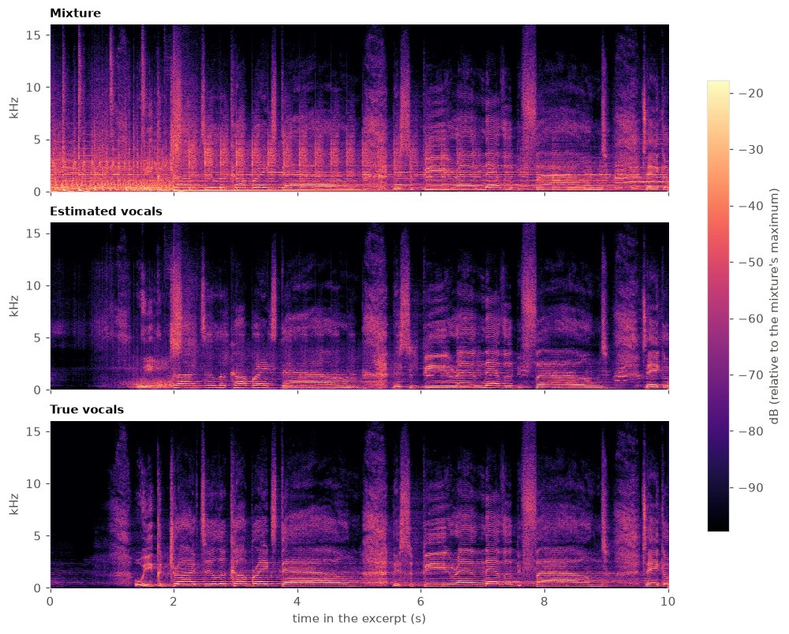
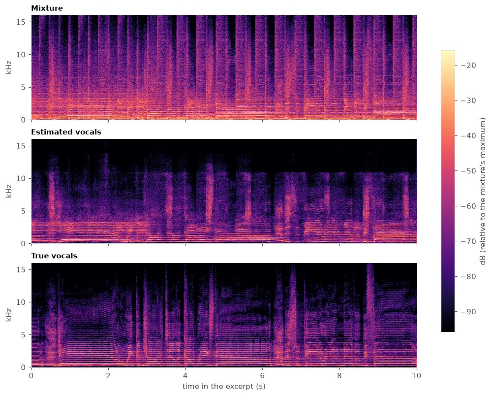
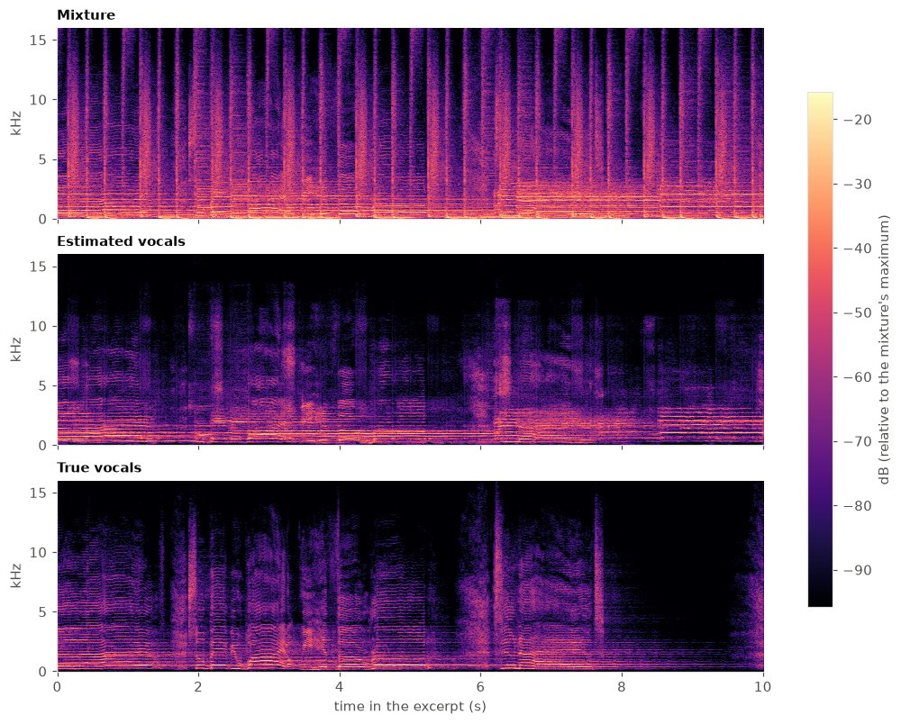
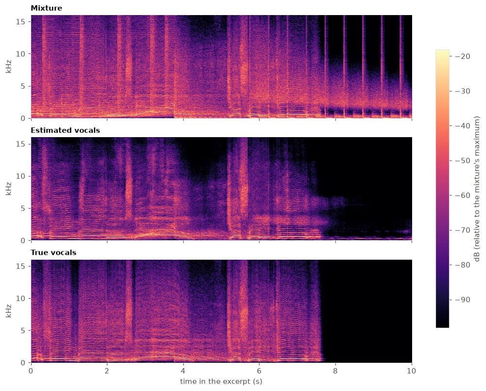
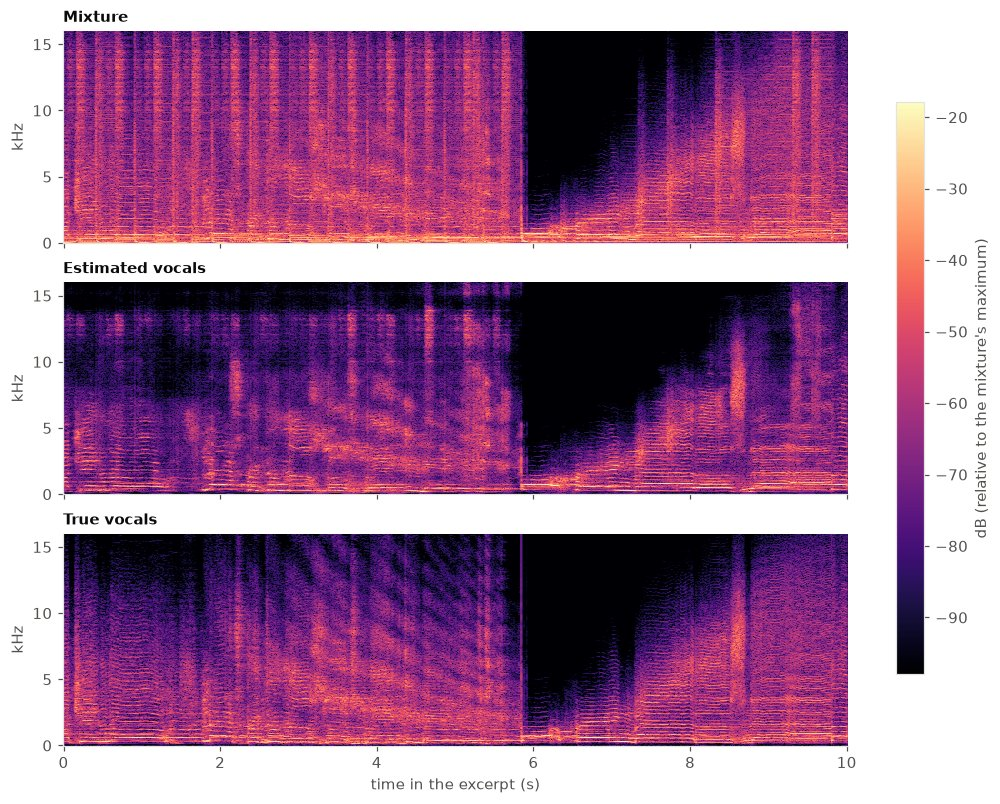
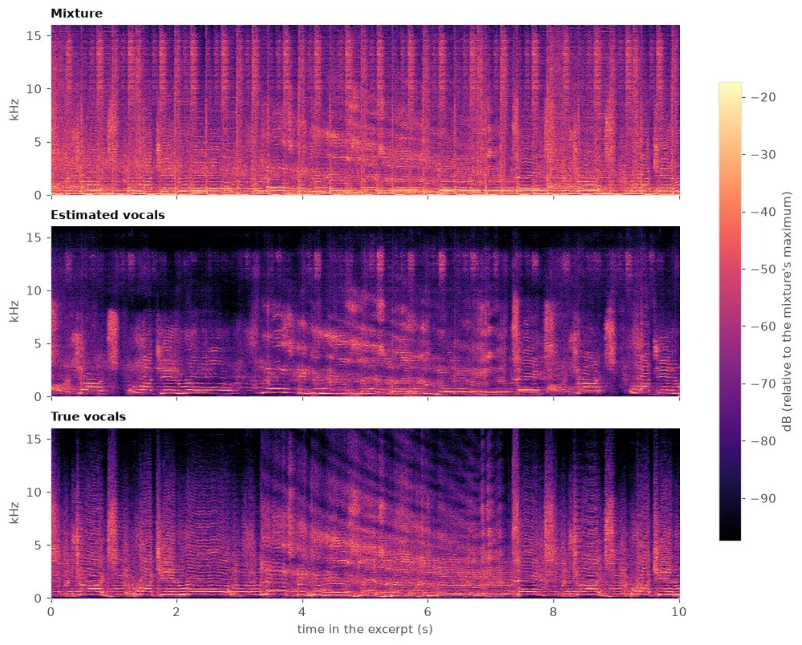

Excerpts of two test tracks separated by the small stereo U-Net of this project (checkpoint outputs/VoiceSeparation/fgvzjxua/checkpoints/baseline-stereo.ckpt). For each track:
the best, a typical and the worst 10 s excerpt, chosen by a fixed rule on the 1 s SDR scores (median over the excerpt), so a good
passage does not hide a bad one. Passages without vocals are left out (their SDR only measures the noise floor). SDR is the BSSEval v4
median over the 1 s windows of the excerpt, as in the evaluation.
The selection uses the ground truth: this describes the model, it is not a blind test.






Audio from the MUSDB18 dataset (Rafii et al., 2017), tracks by The Easton Ellises from the heise stems remix competition, licensed under Creative Commons BY-NC-SA 3.0. The audio has been modified: cut to 10 s excerpts, re-encoded to MP3 128 kbps, and the vocals/accompaniment estimates are outputs of a neural network. The excerpts on this page are shared under the same licence (attribution, non-commercial, share-alike).